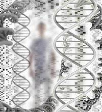
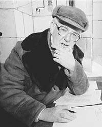

|
 |
|
|
Ведущий научный сотрудник Института биохимической физики РАН Алексей Оловников считает, что старением организма заведует гравитационное поле Луны. Оно вызывает периодические «приливы» в эпифизе, которые оборачиваются гормональными выбросами, укорачивающими жизнь организма.
Почему организм умирает, почему есть определенный срок жизни, почему наступает старение, что является его причиной? Это вопросы, которые ставят перед собой ученые уже сотни лет. Существует несколько десятков теорий старения. Наиболее яркими и правдоподобными, по мнению президента Геронтологического общества РАН профессора Владимира Анисимова, остаются четыре теории: выдвинутая в пятидесятых Д. Харманом свободнорадикальная теория, элевационная В. Дильмана, клеточного старения Л. Хейфлика и теория А. Оловникова.
Нас наиболее сейчас интересуют последние две. Теория Хейфлика связана с эффектом предела деления клеток. Исчерпав лимит, клетки погибают, организм стареет. Однако Хейфлик не объяснил, почему существует этот предел. Загадку разгадал Алексей Оловников. Он предположил, что лимит Хейфлика связан с концевой недорепликацией ДНК, пишет журнал "Эксперт".
Вспомним, как делится клетка: по ДНК бежит специальный фермент - ДНК-полимераза, образуя копию, или реплику, ДНК. Но эта полимераза не считывает кончики ДНК, потому что не захватывает самые крайние последовательности нуклеотидов. Схематично линейная ДНК состоит из структурных генов, кодирующих белки, а на концах ее находятся участки, которые содержат регуляторные гены и некие последовательности, вроде бы не несущие никакой полезной информации. Эти последовательности еще в тридцатые годы открыли ученые Б. Макклинток и Г. Меллер. Они предположили, что кончики ДНК скорее всего служат защитой генома от повреждений. Ученые назвали их теломерами.
Алексей Оловников предугадал, что всякий раз при делении клетки эти теломеры укорачиваются, и придерживался мнения, что это и есть причина старения. Однако в начале нового века он выдвинул новую оригинальную теорию, которую назвал редумерной. Он предположил, что старение связано с укорочением не теломер, а редумер. Редумеры же - это новый тип ДНК, которые, как маленькие петельки, располагаются на хромосомной ДНК. По его мнению, они укорачиваются под влиянием выбросов гормонов, а пик этих выбросов наступает в новолуние.
Идея Оловникова о редумерах многим показалась просто фантастикой - ведь подобные маленькие ДНК не были известны науке. Однако совсем недавно ученые открыли в митохондриях маленькие однонитчатые ДНК. Пока неясно, каково назначение этих коротких ниточек ДНК, но уже сам факт их существования позволяет надеяться, что и двунитчатые маленькие ДНК - редумеры Оловникова - не просто плод фантазии теоретика. «Конечно, редусомная теория Алексея Оловникова, несмотря на ее умозрительный и научно-фантастический характер, если даже и не подтвердится в целом, дает необыкновенный заряд и побуждает заняться поиском удивительного и красивого мира, с которым нас познакомил автор», - комментирует теорию Владимир Анисимов. Академик Владимир Скулачев тоже отмечает, что теория кажется немного сумасшедшей, но ведь все гении немного сумасшедшие... Скулачев не отрицает, что теория Оловникова вполне может оказаться правдой. Между прочим, Скулачев также сообщил, что Алексей Оловников уже не раз выдвигался кандидатом на Нобелевскую премию. Предоставим слово самому Алексею Оловникову.
Алексей Матвеевич, в какой момент вы заинтересовались проблемами старения?
- Изначально я занимался экспериментальными работами в области иммунохимии. А старением заинтересовался в шестидесятые, когда Леонард Хейфлик поставил свои замечательные эксперименты. Он показал, что клетки имеют ограниченный митотический потенциал - в среднем они делятся около 50 раз. До этого считалось, что клетки удваиваются бесконечно. Хейфлик показал, что в клетках сидит нечто вроде «молекулярного бухгалтера», который отсчитывает деления. И всегда помнит, сколько раз клетка поделилась. В серии его экспериментов были и такие опыты: после двадцатого, к примеру, деления клетки замораживали в жидком азоте, а потом вынимали - через пять минут или год - и они продолжали делиться еще положенное число раз, около тридцати.
И Хейфлик связывал этот эффект со старением?
- Да. И все вслед за ним тоже. Предполагалось, что клетки перестают делиться, погибают, организм стареет, начинаются возрастные болезни и так далее. В общем, когда я впервые услышал об опытах Хейфлика, я, естественно, очень заинтересовался. Повторно услышал о них в МГУ. Лекцию о работах Хейфлика прочитал первооткрыватель мезинхимальных стволовых клеток Александр Яковлевич Фриденштейн. Лекции он читал блестяще. Я слушал и обалдевал от этой загадки Хейфлика: ведь он не сказал, откуда у клетки есть этот лимит. Я вышел из университета в состоянии полутранса. Я шел и неотрывно думал, ну что там работает? Ответ не приходил. Так я добрел до метро. А когда спустился вниз, услышал шум приближающегося поезда. И тут осенило. Я понял. Образ сложился. Что такое удвоение клеток? Это по сути удвоение ДНК. ДНК - это рельсы. По ДНК при клеточном удвоении продвигается специальный фермент ДНК-полимераза, который делает копии (реплики) ДНК. Полимераза движется, как ведущий вагон поезда. Но у ДНК, как и у рельсов, есть конец. Как и ведущий вагон, фермент ДНК-полимераза упирается в тупик. Представим себе, что в середине ведущего вагона есть каталитический центр, как в ДНК-полимеразе. Именно он касается рельсов и делает копию. Этот каталитический центр не доходит до конца рельсов. Это означает, что концевая часть нашей ДНК (если говорить о хромосомах, то кусочек теломеры) не будет скопирована. Вот так я нашел решение задачи Хейфлика.
А когда вы выдвинули эту идею?
- В 1971 году я опубликовал статью в докладах Академии наук и в американском Journal Theoretical Biology. Тогда я считал, что теломеры представляют собой просто буферные участки ДНК, которые приносятся в жертву, становясь все короче и короче с каждым делением. Я бегал к молекулярным биологам с просьбами заняться экспериментами и проверить это. А мне мило так говорили: ну ты же вроде не дурак, что ж ты чушь несешь - ведь всем известно, что геном стабилен, не может он укорачиваться. Кстати, и Хейфлик из-за этой догмы не связывал лимит деления с ДНК. А я настаивал - ну скажите, где у меня логические проколы, ну попробуйте, все равно это сделают на Западе, давайте же мы вперед попытаемся.
В общем, сделали на Западе?
- Да, все мои предсказания экспериментально подтвердились. Первое - что концы ДНК - буферная зона, и после каждого деления они укорачиваются. Второе предсказание - природа должна была изобрести компенсаторный механизм в виде особой ДНК-полимеразы, чтобы сохранять концы хромосом в половых клетках, иначе - конец живому. Этот механизм должен так же работать в бессмертных раковых клетках. Позже выяснилось, что этот компенсаторный механизм есть и в стволовых клетках. Эта компенсаторная ДНК-полимераза получила в литературе наименование теломеразы. Еще одно предсказание - в бактериях кольцевая ДНК придумана природой для того, чтобы не было концевой недорепликации. И наконец, я предсказал, что должна быть корреляция между размерами хромосомных концов или теломер и числом проделанных клетками делений. И считал, что это и есть причина старения.
То есть клетки погибают, функции организма слабеют, он дряхлеет и умирает?
- Да, но именно последнее предсказание - о роли укорочения теломер в старении - я сам позже отверг.
Оно не подтвердилось в экспериментах?
- Все предсказания подтвердились в экспериментах. В том числе и корреляция между степенью укорочения теломер и числом клеточных удвоений. Но некоторые исследования показали, что клетки даже старого человека сохраняют способность к удвоению. Брали клетки двадцатилетнего и девяностолетнего, и оказывалось, что разброс в их способности к делению не так уж и велик. Клетки просто не успевают исчерпать свой лимит удвоений до того, как организм постареет и даже отойдет в мир иной. Оказалось, кроме того, что лабораторные мыши с довольно длинными теломерами и дикие с короткими теломерами живут одинаковый срок. И я понял, что не укорочение теломер является движущей силой старения. Когда я высказал эту мысль, друзья на меня руками замахали: ты же сам придумал теломерную теорию, а теперь рубишь под собой сук!
Вы разочаровались в теломерной теории?
- Я стал искать в клетке нечто, что не является теломерой, но так же, как и она, укорачиваясь, умеет считать. Тогда я предположил, что «бухгалтером» мог бы быть еще один тип молекулы ДНК, своего рода, маленькая ДНК.
На концах длинной обычной хромосомной ДНК есть теломерная ДНК, рядом так называемые субтеломерные участки, и в них - некоторые регуляторные гены. Так вот, над некоторыми регуляторными генами возникают, я полагаю, короткие молекулы ДНК, где содержатся копии регуляторных генов.
Эта ваша «дээнкушка» плавает где-то рядом с большой ДНК?
- Нет, не плавает, а заякорена своими концами на теле хромосомы. Эти маленькие ДНК я назвал редумерами. У редумеры, как и у большой ДНК, есть небольшие кончики, вроде теломер, я их назвал акромерами. И этими акромерами она крепится в тех местах, которые ограничивают область хромосомного гена-оригинала. И эта маленькая копия с акромерами выглядит как скобочка или петля на большой ДНК. При делении редумера тоже реплицируется, и копии переходят в дочерние клетки, удерживаясь на хромосомах. И при репликации у нее тоже укорачиваются кончики, как теломеры у хромосомной ДНК. Термин редумера - от редуцировать, то есть уменьшать. Укорочение редумеры в делящейся клетке как раз и вызывает клеточное старение. Но поспешу заметить, что старение делящихся клеток - это еще не старение организма, которое связано с особой разновидностью редумер - хрономерами.
А кто-нибудь видел эти ваши редумеры?
- Нет.
Так почему же вы так уверены, что они там есть, почему не сказать, что вместо редумер там есть штепсель с розеткой или попугай с батарейкой. Вы все придумали!
- Конечно придумал. Один из известных ученых говорил, что наука - это коктейль фантазии и логики. Но кажется, вся эта фантазия вполне укладывается в логику. В логику клетки. Ведь механизм концевой недорепликации теломер я тоже нафантазировал.
что, редумеры нельзя увидеть?
- Знаете, как выглядит ДНК? На срезах - как запутанный клубок с многочисленными петлями. Я думаю, эти редумеры не раз видели, только не идентифицировали их. Когда-нибудь, уверен, их будут разглядывать на студенческом практикуме. В принципе их можно идентифицировать, если прицельно искать, а потом отделить от большой ДНК.
В одной вашей научной статье я читала, что вы делите редумеры на принтомеры и хрономеры
- Да, редумеры - это общее, так сказать, родовое название. Они подразделяются на принтомеры, которые работают в делящихся клетках, и на хрономеры. Участниками биологических часов мозга, особо важных для понимания старения организма, являются именно хрономеры, которые находятся в гипоталамусе.
Ну, приехали! Вы мне рассказывали, что редумеры уменьшаются при делении клеток и это ведет к старению, но ведь нейроны мозга не делятся. Как же тогда в них укорачиваются хрономеры?
- А вот это самое интересное. Укорочение хрономер идет не по механизму концевой недорепликации ДНК, как у теломер и принтомер. Укорочение хрономер связано с эффектом скраптинга (от слов transcription и rupture - разрыв). Разрыв маленькой хрономерной ДНК вызывается при особой форме транскрипции (то есть при построении РНК на ДНК), осуществляемой транскрипционной машиной - РНК-полимеразой. Предполагается, что при особо интенсивной транскрипции хрономер происходит разрыв фиксированного на теле хромосомы конца этой хрономеры. Такое случается изредка - на фоне резко повышающегося выброса гормонов в центральной нервной системе.
При каких обстоятельствах?
- При участии Луны.
Н-да...
- Вы думаете, не пора ли вызывать психовозку? Сейчас объясню. Тут мы немножко оставим в покое нашу рвущуюся хрономеру. Известный советский ученый Владимир Михайлович Дильман уже давно предполагал, что в гипоталамусе человека тикают биологические часы. Но он не объяснил, что является пружиной их механизма. Он был эндокринологом и связывал тиканье часов с уровнем гормонов. Гормоны выполняют множество функций в организме. Основными гормональными центрами мозга являются гипоталамус, гипофиз и эпифиз. В эндокринной системе работает своя система сдержек и противовесов - вырабатываются гормоны, синергисты и антагонисты, все для того, чтобы надежно работала система. Но я полагаю, что природа использовала эту управленческую эндокринную систему, еще и чтобы время считать. Мы ведь знаем, что примерно в пятнадцать лет происходит половое созревание, примерно в тридцать - полностью интеллектуально созревает мозг, примерно в пятьдесят - менопауза у женщин, и в некий срок - андропауза у мужчин. Гормоны подчиняются различным ритмам. Человек вообще насквозь пронизан ритмами. Природа, с моей точки зрения, должна была выбрать такой относительно редкий ритм, который бы влиял на укорочение хрономер и при этом действовал, максимально экономно расходуя длину этих хрономер.
То есть биологическими часами управляют гормональные ритмы?
- Да. Этот темпоральный ритм я называю Т-ритмом. Некий гормон (или гормоны) на пике выброса должен действовать на укорочение хрономер. Как я уже сказал, за счет транскрипции. Поступление к клеткам гипоталамуса (именно там лежат хрономеры) стимулирующих гормонов заставляет РНК-полимеразы бежать по хрономере (и, конечно, вообще по любой транскрибируемой ДНК) быстрее, создавая много копий РНК. Но полимеразы бегут так интенсивно, что на пике гормонального Т-ритма чисто механически обрывают концы акромер в местах их заякоривания. Короткий оторванный кусочек акромеры разрушается ферментами, а вспомогательные белки, постоянно сидящие на ДНК хрономеры, закрепляют укоротившуюся теперь акромеру повторно на ее прежнем месте. Но теперь хрономера стала короче. И это равносильно одному «тику» хрономерных часов мозга. В следующий пик выброса гормонов она станет еще короче. Но что еще происходит? Поскольку места крепления ее концов на хромосомной ДНК всегда находятся на одном и том же стандартном расстоянии друг от друга, то хрономера, как некая петля или пружина, с каждым разом все сильнее натягивается между этими точками. В хрономере нарастает так называемое торсионное (крутильное) напряжение. А это напряжение неизбежно должно сказываться на работе РНК-полимеразы. В опытах с индивидуальной молекулой ДНК американские ученые намеренно сильно перекручивали, натягивали или, наоборот, распускали ДНК и наблюдали, как меняется темп движения полимераз по ДНК. Оказалось, что слишком большое торсионное напряжение в ДНК может даже остановить работу полимераз. Так и в чрезмерно натянутой хрономере должна падать продуктивность РНК-полимеразы.
И почему это может влиять на старение всего организма?
- В петле-хрономере сидят гены, которые регулируют работу структурных генов в обычной хромосомной ДНК через регуляторные РНК. Так вот, РНК-полимераза из-за напряжения в натянувшейся хрономерной петле вынуждена двигаться все медленнее и, значит, производить все меньше регуляторных РНК. А без них активность структурных генов хромосом не может проявляться в полную силу. Поэтому падает синтез продуктов этих генов. Этих продуктов становится все меньше (или, напротив, больше, если укорочение хрономеры вызывает уменьшение синтеза белков-ингибиторов). То есть у старика какая-то продукция клеток может уменьшаться, а какая-то увеличиваться, и все это ведет к гормональному дисбалансу, к изменению активности самых разных клеток. И весь организм из-за этого стареет.
В общем, я постулировал, что сигналом старения является недостаточность продуктивности хрономерных регуляторных генов. И количество прожитых лет гипоталамус человека запоминает укороченными акромерами, а не теломерами большой ДНК, как думал раньше. Да, теломеры тоже укорачиваются, но они являются как бы невинными свидетелями процесса старения. Теломеры не могут о своем укорочении сказать клетке. А хрономеры могут. Потому что от них в конечном итоге зависит активность структурных генов.
Ну и как, к примеру, этот процесс сообщает, что пришло время полового созревания?
- Если, к примеру, в гипоталамусе, укорачивается хрономера, которая регулирует продукцию генов большой ДНК, ответственных за сдерживание процесса полового созревания, то постепенно ее укорочение отпустит эти вожжи. Вы созреете.
А с Луной какая связь?
- Я думаю, что Т-ритм - это лунный 28-дневный ритм. Солнце - наш ритмоводитель в суточных ритмах, а Луна тоже наш ритмоводитель, только в ритмах, контролирующих продолжительность жизни.
Но тогда у нас должна быть какая-то антенна, что ли?
- Грависенсор. Вы слышали, что в нашем ухе есть сенсор, который позволяет нам знать, куда мы склоняем голову? Там на тоненьких волосках висят как бы маленькие шарики. Так вот они, когда мы наклоняемся, касаются клеток уха, и так мы чувствуем, в какую сторону наклонились.
А ваш грависенсор сидит не в ухе?
- Нет, в эпифизе. Я назвал его луносенсором. И важнейшим компонентом этого луносенсора является песок.
Песок в мозгах? Что ж, в этом что-то есть.
- Не удивляйтесь, есть научное название - песок мозга (brain sand). Это такие кальциевые камушки, которые находятся в межклеточном пространстве в эпифизе, или иначе в шишковидной железе нашего мозга. Они плотнее и крупнее клеток и под влиянием Луны, особенно сильно в период новолуний, давят на клетки эпифиза, и те начинают в ответ выбрасывать из этой эндокринной железы нейропептидные гормоны, находящиеся в специальных клеточных пузырьках-вакуолях. Так формируется пик выброса гормонов. Эпифизарные гормоны атакуют гипоталамус, стимулируют его, через него - гипофиз, и суммарно возникает гормональный коктейль, который заставляет клетки, содержащие хрономеры, особо напряженно работать и в ходе этой работы укорачивать их.
И все это происходит в определенный момент?
- Да, при участии Луны. Луна гравитационно слабо влияет на все, что есть на Земле, поскольку ее гравитационная сила много меньше земной. Но в новолуние, когда Земля, Луна и Солнце выстраиваются в одну линию, гравитационная сила Луны суммируется с солнечной. И тогда, например, происходят наиболее мощные океанские приливы. И происходит смещение песчинок в эпифизе. Именно поэтому эпифизарный грависенсор я назвал луносенсором.
А нельзя ли сделать так, чтобы эти ваши Т-ритмы, которые ведут к укорочению хрономер, тикали бы пореже?
- Действительно, хотелось бы, чтобы пореже. И думаю, в будущем такое станет возможным. Возникнет новая отрасль фармакологии - поиск лекарств, управляющих новой, постулированной мной физиологической системой организма - луносенсорной.
Да, братья Гримм просто отдыхают. Как это вы так хитро связали Луну с песком, гормонами и хрономерами?
- На одной из конференций в Стромболи сицилийцы нас возили вокруг вулкана. Ночь, Луна, море, вулкан... Что-то в подсознании осело. А на конференции было много материалов об эпифизе. Вернувшись в Москву, я начал их читать. И надо же, что я вижу - срезы эпифиза, похожие на поле, усеянное валунами, а между ними клетки. Валуны - это песчинки. Тот самый песок мозга. И тогда произошел, как любят выражаться психологи, инсайт: Стромболи, Луна, песок в эпифизе. Все выстроилось и связалось. И я судорожно начал строчить новую теорию. Довольный, что все так логично. Но когда написал, прочитал еще одну небольшую заметку о том, что песок-то он есть, конечно, в эпифизе взрослого человека, но у эмбриона-то его нет.
Представляю, ваша конструкция стала рушиться как замок из песка.
- Я пребывал в жутком расстройстве. Целых полчаса. Боже мой, но ведь эмбриону очень даже нужны часы, чтобы строить организм во времени. И я стал рыть всю информацию об этом песке. И тут природа протягивает руку. Действительно, у человеческого эмбриона нет песка в эпифизе, но, оказалось, его полно в эмбриональном гипофизе. И он там механически воздействует на эндокринные клетки. А потом, примерно к рождению ребенка, этот песок рассасывается в гипофизе и впервые появляется в эпифизе. Вот так.
Удачно. И что дальше? Как теорию можно привязать к практике? Академик Скулачев уже пробует свои капли, которые делают зрячими собак и лошадей, а вы что предлагаете, антигравитационный шлем?
- Нет, шлем не предлагаю. Но как только
найдут редумеры, а я в этом уверен, можно будет
использовать их продукты. А можно идти и другим путем. Мы с одним российским
экспериментатором задумали проект, смысл которого в поиске прерывания
лекарствами сигналов, ведущих мозг к старению.
РОССИЙСКИЙ УЧЕНЫЙ
РАЗРУШАЕТ МЕХАНИЗМ ЗАПРОГРАММИРОВАННОЙ СТАРОСТИ
Сергей ЛЕСКОВ
В МГУ впервые проведен фестиваль "Дни науки". С лекциями выступили яркие ученые, но, пожалуй, самый сенсационный доклад о возможности замедления, отмены и даже обращения вспять процессов старения прочитал декан факультета биоинженерии и биоинформатики МГУ, директор Института физико-химической биологии академик Владимир Скулачев. Это одно из самых актуальных, перспективных и вместе с тем спорных направлений современной науки. В 2002 году за исследования в этой области была присуждена Нобелевская премия, но работы английских и американских биологов касались червей. Академик Скулачев работает с высшими млекопитающими. После лекции он ответил на вопросы обозревателя "Известий" Сергея Лескова.

в: Пять лет назад именно "Известиям" вы впервые рассказали о своих работах, направленных на обращение вспять процессов старения. Два года назад вам удалось увлечь олигарха Олега Дерипаску, который стал инвестором ваших исследований. Есть ли новые успехи?
о: Во время первого разговора с Дерипаской я держал за правую ногу памятник Павлову. Думаю, это помогло. Но инвестора я сразу предупредил, чтобы он лично ничего от этого проекта не ждал, потому что моя гипотеза может оказаться ошибочной. В науке случаются страшные заблуждения. Итак, нам удалось получить вещество, которое мы просто выдумали. Вот результат: за 3 последних месяца с помощью нашего препарата из 13 ослепших от старости собак мы вылечили 9, из 4 слепых кошек - 3, прозрели также все 6 слепых кроликов и древний, абсолютно слепой мерин. Животные, от которых уже отказались ветеринары, страдали дистрофией и воспалением сетчатки. Эти исследования проводятся на базе Московской ветеринарной академии. В опытах над сотнями мышей и крыс достигнут успех в лечении 12 различных старческих заболеваний.
В детстве моим любимым героем был доктор Айболит. И вот, когда я дожил до седых волос, я сам вроде звериного врача. Не могу удержаться от замечания лично в ваш адрес, ведь вы часто критикуете российскую науку за бездеятельность: вот пример того, что может наша наука, когда ей помогает просвещенный бизнес. Впервые в жизни я могу платить сотрудникам достойную зарплату.

Я считаю, что старость - это болезнь, ее нужно лечить, как любой другой недуг. Если я вылечу человека от старости, то я вылечу его и от рака с инфарктом - чаще всего старческих болезней. Я не говорю о бессмертии, несчастные случаи и катастрофы не в моей компетенции. Но увеличить продолжительность жизни и при этом сохранить ее высокое качество я считаю возможным.
в: В 2002 году Нобелевскую премию получили Бреннер, Хорвиц и Салстон, которые выяснили, в каких генах круглых червей (нематоды) закодирован их добровольный уход из жизни. Найдены гены, которые толкают нематоду на харакири. Их выключение продлевает жизнь червяка в 7 раз. Подобные гены найдены и у человека. Как ваши исследования соотносятся с работами других ученых?
о: В нашем инвестиционном проекте участвует 18 организаций, в том числе из США. Существует гипотеза, что в клетках имеются гены, которые включают механизм запрограммированной смерти в тот момент, когда организм изнашивается.
Изношенные индивиды для популяции вредны, об этом писал еще Вейсман, которого поносил в СССР Лысенко. С другой стороны, некоторые моллюски, рыбы, черепахи, крупные птицы и киты растут и размножаются до самой смерти, а потом внезапно уходят из жизни. Старости у них нет. Создается впечатление, что старость - это процесс ускорения эволюции, созданный организмами, не удовлетворенными условиями существования. Процессы старения включаются в тот момент, когда организм прекращает рост. При высоком уровне комфорта можно отказаться от старения по примеру животных, у которых нет врагов.
С биохимической точки зрения процесс старения связан с тем, что внутри клетки повышается уровень ядовитых соединений кислорода. Животворящий кислород, снабжая энергией клеточные митохондрии, в определенный момент оказывается самурайским мечом. Проводить генетические манипуляции с уже расшифрованным геном клеточной смерти кажется рискованным - и мы решили бороться с ядовитыми радикалами кислорода и этим способом разрушить механизм запрограммированной старости и смерти. В США предложен термин "Скулачев-ионы", они лежат в основе нашего вещества, защищающего липиды митохондрий. Медицина, не зная тонких механизмов, давно советует пожилым людям принимать витамин Е и аскорбиновую кислоту, которые связывают ядовитые формы кислорода.
в: Успех с животными воодушевляет. Но когда вы перейдете на приматов и на человека?
о: В проект включились институты РАМН. Пока поставлены опыты над клетками шейки матки человека. Удалось практически полностью остановить процесс их самоубийства. Мы вылечили от старческой слепоты домашних животных, но это не означает, что мы создали лекарство от старения. Глаз человека устроен несколько иначе.
Самое главное, что мы начали атаку на старение. Может быть, разобьем нос, но атаку не остановим. Цель - продлить не старость, а молодость. Нет, я не уверен, что прав. Это одна из точек зрения, но нелепо было бы не использовать шанс найти истину.
Кто и как искал эликсир молодости
В советские времена старость обещал победить киевский профессор
Богомолец, ему выделялись огромные средства. Профессор умер, не дожив до 70
лет. Сталин стукнул кулаком: "Мерзавец,
обманул!" Над проблемой омоложения организма работал нобелевский лауреат
Илья Мечников, но и он рано ушел из жизни. На этой ниве трудились античный врач
Гален (II век н. э.), китаец Ко Хуан (IV век н. э.),
восточный философ и врач Авиценна (XI век) и англичанин Роджер Бэкон (XIII
век), которого считают одним из основателей современной науки. Бэкон верил, что
рецепт бессмертия был известен в древности, когда пророки во главе с Мафусаилом
жили по нескольку сотен лет. Долг ученых в том, чтобы восстановить утерянный
рецепт.
http://www.inauka.ru/experiment/article69052
|
|